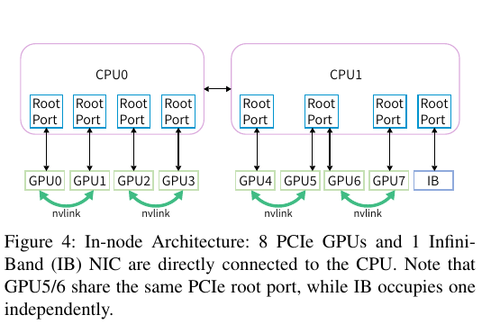
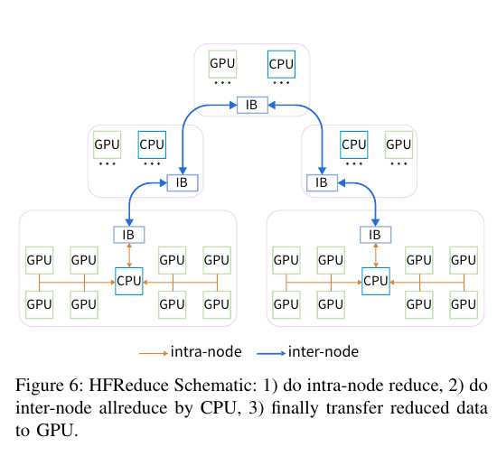
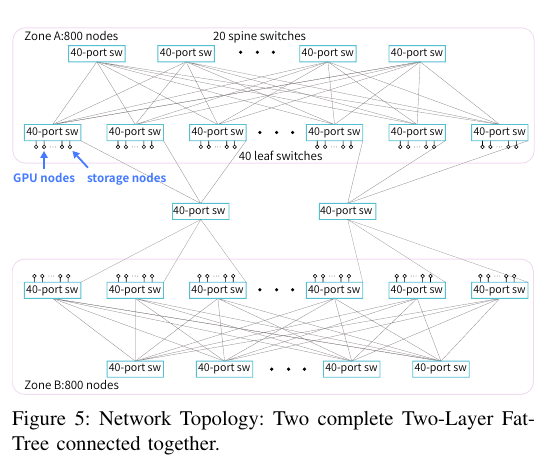
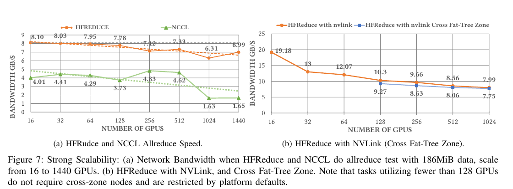
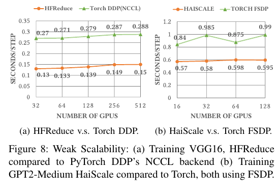
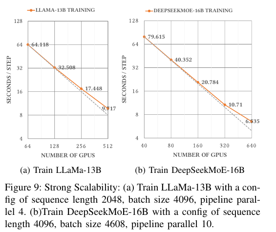
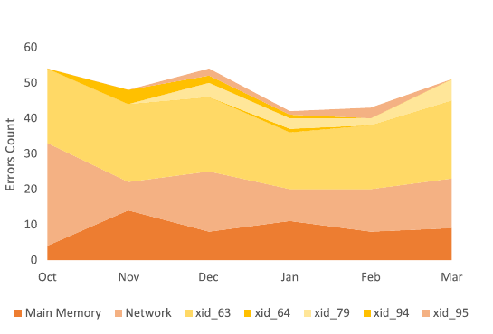
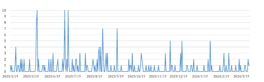

Fire-Flyer AI-HPC: A Cost-Effective Software-Hardware Co-Design for Deep Learning
Fire-Flyer 以較便宜、較省電但互連較弱的 PCIe A100 節點建成 10,000-GPU 訓練叢集Abstract, §I · PDF p.1，再由 HFReduce、HaiScale、計算—儲存共網、3FS 與 HAI 平台共同補回通訊、I/O 與故障復原能力。最強的直接證據是同叢集內 186 MiB all-reduce 的 6.31–8.10 GB/s§IV-C–D · PDF p.7 · Figure 7，以及 VGG16／GPT-2 Medium 的 PyTorch baseline 對照§V · PDF p.8 · Figure 8；「約 80% DGX 效能、半價、低於 60% 功耗」§III-C · PDF p.5 · Tables II–III則混合 GEMM microbenchmark、相對成本表與部署敘述，不能視為同一套 end-to-end DGX 實驗。
文章目錄
先懂哪些硬體路徑，才能判斷「便宜」是否換來新瓶頸？
本文不是把 DGX-A100 的零件換便宜而已；它改變了 GPU、CPU、NIC 與儲存之間的資料路徑。因此先分清五個概念，後面才能判斷 HFReduce 是修掉瓶頸，還是把瓶頸搬家。
PCIe A100 與 SXM／NVLink 的差異在哪裡？
一台 Fire-Flyer 計算節點有 8 張 PCIe A100、2 顆 AMD EPYC CPU 與 1 張 200 Gb/s InfiniBand（IB）NIC；DGX-A100 的比較欄則是 8 張 SXM A100、全互連 NVLink 與 9 張 200 Gb/s NIC。PCIe 卡與 NIC 都掛在 CPU root complex 下，資料若要跨節點，通常會經過 GPU↔CPU／host memory↔NIC 路徑。本文稍後的 HFReduce 正是利用這條路徑，同時也受它限制。§III-A · PDF p.4 · Fig. 4, Table I
{kind=link}

All-reduce 的目標不是「送資料」，而是讓每張 GPU 得到同一個和
資料平行訓練中，每張 GPU 先算出自己的 gradient。All-reduce 要完成兩件事：把所有 gradient 做 reduce（例如相加），再把結果送回所有 GPU。環狀 NCCL 把工作分散在 GPU 與鏈路上；HFReduce 則先在每台節點內由 CPU 合併 8 份，再讓節點間只交換一份縮合結果。後面所有頻寬數字都是「完成這個集體操作時的有效頻寬」，不是單一 PCIe 或 NIC 的線速。§IV-A–B · PDF p.6 · Fig. 6, Algorithm 1
共享 Fat-Tree 為何會有 incast 與 head-of-line blocking？
Fat-Tree 以多條 leaf→spine 路徑提供高雙分頻寬；但 Fire-Flyer 把 HFReduce、NCCL、3FS 儲存與其他流量放在同一張網路。多台儲存伺服器同時寫回一個 client 時形成 incast，同一佇列內的壅塞封包又可能拖住其他流量（head-of-line blocking, HOL）。因此本文後面用 InfiniBand Service Level／Virtual Lane 分流、靜態路由分散儲存節點，並以 request-to-send（RTS）由 client 限制同時 sender 數。§VI-A–B · PDF pp.9–10
Strong consistency、checkpoint 與 availability 分別解什麼問題？
3FS 的 Chain Replication with Apportioned Queries（CRAQ）採「所有副本都寫、任一副本可讀」，目標是兼顧強一致性與 SSD 讀吞吐；checkpoint 則把模型參數與 optimizer state 定期寫入 3FS，使訓練故障後可回到最近狀態。兩者都不是硬體不壞，而是控制資料正確性與可恢復時間。HAI validator 再以週期性壓力測試提前隔離可疑節點。§VI-B, §VII-A–B · PDF p.10
有了這些路徑與語意，真正的問題就清楚了：省下 NVSwitch、多 NIC 與三層網路後，訓練、儲存與故障恢復都被壓到同一組 CPU、記憶體與網路資源上。
一張 NIC 的 PCIe 節點，為何無法靠既有軟體直接放到萬卡？
作者選 PCIe A100 的直接收益是節點價格與功耗較低；代價是節點內沒有八卡全互連，跨節點只有一張 NIC，而且計算與儲存共用網路。萬卡規模把這些局部弱點放大成同步訓練的全域慢點。
從症狀推回根因，再導出四個成功條件
| 可觀察症狀 | 根因 | 設計需求 | 作者的端到端對策 | 證據邊界 |
|---|---|---|---|---|
| NCCL all-reduce 在同叢集僅約 1.63–4.83 GB/s。 | EPYC Rome 的 GPU↔NIC P2P 路徑缺少 chained write；一台又只有一張 NIC，PCIe／root complex 競爭被放大。 | 減少每份 gradient 經過 PCIe 的次數，且不要占用 GPU SM。 | HFReduce：D2H→CPU SIMD reduce→RDMA double binary tree→H2D；後來再用成對 NVLink 預先合併。 | 量測支援有效頻寬改善，但沒有逐組件消融 CPU copy、NUMA、tree 與 GDRCopy。§IV-B–D · PDF p.7 · Fig. 7 |
| 訓練 communication 不能完全藏在 backward 後面；FSDP 還有 fragmentation 與 gather/scatter 等待。 | collective 被當成訓練步驟外部的阻塞階段，記憶體與 optimizer 更新時序未共同排程。 | 讓傳輸與 forward／backward 重疊，並配合 DP／PP／TP placement。 | HaiScale DDP／FSDP 使用 HFReduce、非同步 all-gather／reduce-scatter、optimizer step 切分與 PP 時序錯開。 | 只有 VGG16 與 GPT-2 Medium 對 PyTorch baseline 的圖；缺軟體版本、batch 與重複試驗。§V · PDF p.8 · Figs. 8–9 |
| 儲存讀流量會對單一 client incast，並與集體通訊互相阻塞。 | 同一張兩層 Fat-Tree 同時承載四類流量；adaptive routing 會把局部儲存壅塞擴散到更多路徑。 | 隔離 traffic class、控制 sender 數，又保留高 I/O 與一致性。 | SL→VL、靜態路由、NUMA-aware NCCL、3FS RTS，加上 180 台雙 NIC／16-SSD storage nodes。 | 有 8 TB/s aggregate read 數字，沒有 QoS on/off、tail latency、drop／CNP 或壅塞時間序列。§VI-A–B · PDF pp.9–10 · Table IV |
| 數週至數月的 LLM 訓練會遇到 GPU、記憶體與網路事件。 | 同步工作跨越上千裝置，單點異常可中止整個 job；大 checkpoint 又可能拖慢訓練。 | 快速 checkpoint／restart，且在排程前找出壞節點。 | HAI time-sharing、3FS 非同步 checkpoint、每週 validator 與故障分類。 | 附錄提供事件數，但沒有 MTBF、job success rate、downtime 或 validator false-positive rate。§VII · PDF pp.10–11; Appendix Tables VI–VIII · PDF pp.17–18 |
為什麼最近的替代方案都只解一半？
DGX-A100 以 8-GPU NVLink fabric 與 9 張 NIC 提供較直接的通訊能力，但本文的相對表列節點價格為 100%、功耗 4200 W；Fire-Flyer 節點相對為 60% 與 2500 W。一般 PCIe + 三層 Fat-Tree 保留便宜 server，卻需要 200 台 switch，本文兩區兩層設計只列 122 台。PyTorch DDP／FSDP + NCCL 可直接使用，卻沒有針對該 PCIe／單 NIC 節點的 CPU-side reduction 與訓練時序最佳化。這三者分別是硬體能力、網路規模與軟體 baseline，不能混成同一個公平 end-to-end 對照。§III-B–C · PDF p.5 · Tables II–III §V · PDF p.8 · Fig. 8
下一節先不用記完整系統，只追蹤一個 gradient chunk；它會揭示整篇 co-design 的共同手法。
把主機記憶體當「換車站」，為何能救回 PCIe 叢集？
先跟著一個 gradient chunk 走一圈
想像每台節點的 8 張 GPU 各有一箱同尺寸 gradient。NCCL ring 像讓八箱貨在多個站點間反覆拆分、轉送與合併；在這台機器上，每次轉送都可能穿越有限的 PCIe／root-complex 路徑。HFReduce 改成先把八箱送到同一個「CPU 換車站」，用 SIMD 一次合成一箱，再讓節點間的 double binary tree 只搬這一箱；結果返回後，再由 host memory 發給八張 GPU。§IV-A–B · PDF p.6 · Fig. 6, Algorithms 1–2
- 到站：每張 GPU 將 chunk 非同步 D2H；小塊用 GDRCopy，大塊用 MemCopyAsync。
- 站內合併：CPU SIMD 把 8 份 FP32／FP16／BF16／FP8 資料相加。
- 站間運輸：IB 以 RDMA WRITE 跑 double binary tree all-reduce。
- 返程：CPU 把結果 H2D 給每張 GPU；同一 NUMA node 的四張 GPU 可利用 GDRCopy 與 CPU cache，減少重複 host-memory read。
- 藏進工作：因搬運走 GPU Copy Engine 而非 SM，HaiScale 可在 backward 產生下一個 chunk 時處理上一個 chunk。
{kind=link}

同一個洞見也支配網路與儲存：先在共享瓶頸前做 admission control
HFReduce 在 NIC 前先做節點內 reduce；3FS 在 client 前先核發 RTS，限制同時送資料的 storage servers；HAI scheduler 又限制最多一個跨區計算工作，讓兩個 network zones 之間只有一對節點通訊。三者共同的策略是：不要讓大量獨立 producer 同時撞進稀缺共享路徑，而是在路徑前聚合、錯開或限流。§III-B · PDF p.5 · Fig. 5 §VI-B · PDF p.10
作者用下式給出直覺：若參與 GPU 數為 \(n\)，NCCL ring 每單位資料有 \(2n-1\) 次傳送，折成 PCIe 雙向頻寬需求為
\[B_{\mathrm{PCIe,NCCL}}=\frac{2n-1}{n}\;\text{units},\qquad B_{\mathrm{PCIe,HFReduce}}=1\;\text{unit}.\]
作者主張這是解釋「為何值得搬到 CPU」的流量模型，不是完整效能模型；它沒有包含 CPU reduction、cache miss、NUMA、root-port sharing、tree latency 與 overlap。這些未計成本稍後正好成為 HFReduce 的實測缺口。§IV-B · PDF p.6
類比在這裡停止：CPU 換車站不是免費轉運。若記憶體要為每份 gradient 搬 24 倍資料，或兩張 GPU 共用 root port，它會成為新的瓶頸。
一個 training step 如何穿過 HFReduce、HaiScale、3FS 與 HAI？
系統可以按兩條相交的路徑理解：快路徑在每一步訓練內搬 gradient 與 model shards；慢路徑負責資料／checkpoint、排程與健康檢查。兩條路共享 CPU、記憶體與網路，因此不能分開最佳化。
先看完整時間線：從資料讀取到下一步恢復點
HAI 配置可用節點與 network zone
→ 3FS client 讀取資料；storage server 先等待 client 的 RTS grant
→ HaiScale forward：FSDP 需要時 all-gather parameter shards
→ backward 逐 chunk 產生 gradient
→ D2H → CPU SIMD reduce → RDMA double-tree → H2D
→ 與下一段 backward 重疊
→ reduce-scatter / optimizer step 分段執行
→ 週期性非同步 D2H，3FS batch-write checkpoint
→ 若故障：中斷、隔離節點、從最近 checkpoint 載入並續跑這個順序同時回答四個要求：HFReduce 減少 PCIe 重複傳輸；HaiScale 把殘留通訊藏進計算；3FS 讓 data／checkpoint 有高吞吐與一致副本；HAI 把長時間 job 的中斷變成可恢復事件。§IV–V · PDF pp.6–8 §VI-B–C, §VII-A · PDF pp.9–10
實體底座：兩區兩層 Fat-Tree，計算與儲存共網
10,000 張 A100 對應約 1,250 台八卡計算節點與近 200 台儲存伺服器。每個 network zone 是可連接約 600 台計算節點的 800-port 兩層 Fat-Tree（20 spine、40 leaf）；每台 storage server 用兩張 NIC 各接一區。兩區只有有限連線，HAI 因此限制同時最多一個 cross-zone 計算工作；double binary tree 讓跨區時僅一對節點互傳。§III-B · PDF p.5 · Fig. 5
{kind=link}

HFReduce：用 CPU 與 host memory 重寫 collective 的資料面
每個 gradient 被切成 chunks。當某 chunk 的八份 D2H 完成，CPU 執行向量化加法；inter-node 階段由 ibverbs RDMA WRITE 實作 double binary tree，收到資料即可 reduce，再沿反向 tree 分發；最後結果 H2D 回八張 GPU。buffer 採 NUMA interleave，CPU reduction／network buffer 綁到 NIC 的 NUMA node。小資料與四卡 H2D 使用 GDRCopy，較大 D2H 使用 MemCopyAsync。§IV-A, IV-D · PDF pp.6–7 · Algorithms 1–2
作者主張Copy Engine 不占用 GPU SM，因此可達「完全非同步且沒有 overhead」。較精確的讀法是：它避免了 GPU kernel reduction overhead；CPU、記憶體、PCIe 與同步成本仍存在，且實測沒有直接證明 overhead 為零。§IV-B · PDF p.6
論文逐階段計數：D2H 8 writes；CPU reduce 8 reads + 1 write；IB 2 reads + 2 writes + 1 reduce-read；GDRCopy H2D 2 reads，共為原 gradient 大小的 24 倍 host-memory traffic。以實際記憶體頻寬 320 GB/s：
\[B_{\max}\approx\frac{320}{24}=13.3\ \mathrm{GB/s}.\]
分析作者再納入 all-reduce 與網路後估約 12 GB/s，但量測僅略高於 8 GB/s；GPU5／6 共用 root port、兩張 GPU 併發只能約 37 GB/s，以及雙向傳輸，是差距的具體來源。§IV-D · PDF pp.7–8
LLM 時代加入成對 NVLink 後，先讓每對 GPU 經 NVLink 預先 reduce，再只把一份送 CPU；回程則先送一張 GPU、再由 NVLink all-gather 給配對卡。它降低 host-memory／root-port 壓力，也提供二卡 tensor parallel（TP），但仍不是八卡全互連。§IV-C–D · PDF pp.6–8 · Fig. 7b
HaiScale：讓 collective 的完成時間服從訓練依賴，而非獨立 barrier
HaiScale DDP 在 backward 中每個 gradient chunk ready 後立即觸發 HFReduce，嘗試與後續計算重疊。HaiScale FSDP 採 ZeRO Stage-3 語意：調整記憶體管理以降低 fragmentation，將 all-gather／reduce-scatter 與 forward／backward 重疊，並把 optimizer step 拆入 backward。對 pipeline parallel（PP），它讓同一節點的八張 GPU 屬於不同 data-parallel ranks，使各 rank 的 PP 通訊時間錯開，避免同時爭用單 NIC。§V-A–B · PDF p.8
網路與 3FS：四類流量分艙，再由 client 控制 incast
網路把 HFReduce、NCCL、3FS 與其他流量映射到不同 InfiniBand Service Level，再映射到 Virtual Lane 並配置比例；儲存流量採靜態路由，storage／compute／management nodes 均勻分散到 leaf→spine links。NCCL 只走與 NIC 同 NUMA 的 GPU，並開啟 PCIe Relaxed Ordering。作者因找不到同時適合 HFReduce 與 3FS 的 DCQCN 參數而停用它。§VI-A, §VIII-A · PDF pp.9, 11–12
| 階段 | 狀態／動作 | 解決的需求 |
|---|---|---|
| 定位 | meta service 從分散式 KV 的 inode table 與 directory-entry table 解析檔案、chain offset 與 stripe size。 | 多個 meta services 可並行處理 namespace。 |
| 副本 | file chunk 依 chain table 放到多個 storage targets；CRAQ 採 write-all-read-any，targets 來自不同 SSD／chains。 | 強一致性與跨 2,880 SSD 的讀取分散。 |
| 讀 SSD | storage service 先把資料讀出，但不立即送到 client。 | 將 SSD I/O 與網路 admission 分離。 |
| RTS grant | storage service 詢問 client；client 只允許有限數目的並行 sender。 | 抑制 incast；代價是增加端到端 latency。 |
| 傳輸 | 獲准者以 RDMA WRITE 傳資料，再以 RDMA SEND 通知完成。 | 維持高吞吐並避免所有 sender 同時灌入。 |
180 台 storage nodes 各含 16 顆 15.36 TB NVMe SSD、2 張 200 Gb/s NIC，總計 2,880 SSD、超過 20 PiB 鏡像冗餘空間。理論 outbound 為 \(360\times200/8=9\) TB/s，作者報告 aggregate read 8 TB/s，約為線速總和的 88.9%。這是總讀取數字；論文未給 workload、block size、replication read path、延遲分布與測量時間。§VI-B · PDF pp.9–10 · Table IV
HAI：把資源分享、checkpoint 與預防性驗證接成恢復控制面
HAI 採 time-sharing：task 接受 interrupt signal、儲存 checkpoint、通知平台、之後從 checkpoint 復原。它不把 GPU 做細粒度 pooling，而是以計算節點為基本單位標記 resource type 與 network zone。checkpoint manager 將 parameters／optimizer states 切 chunk，非同步 D2H 後以 3FS batch write；作者稱每節點超過 10 GiB/s、通常每 5 分鐘一次、save/load 數秒，因此硬體中斷最多損失最近 5 分鐘進度。§VI-C, §VII-A · PDF p.10
每週 validator 檢查 frequency／link、CPU 壓力與記憶體、GPU 每一 byte memory、滿記憶體 GEMM、intra-node all-reduce 與 storage stress，再把故障節點移出排程。這是一套部署程序描述；論文沒有測 validator 的預測準確率或它對 job success rate 的因果效果。§VII-B · PDF p.10
哪些量測真的支撐 80% 效能、半價與低功耗？
以下不按論文段落，而以 claim–test pair 排列。每一組都把主張、測試、觀察、可支持結論與不能跨越的邊界放在一起。
Claim–test 1：低成本節點是否保留足夠的計算／功耗效率？
主張。 作者主張PCIe 架構可達 DGX-A100 約 80% 效能，以約一半建置成本、低於 60% 功耗運作。Abstract, §I, §X · PDF pp.1, 12
測試與控制。 Table II 比較單 GPU TF32／FP16 GEMM、節點相對價格與 ResNet 訓練平均功耗；Table III 另比較本文網路、同規模三層 PCIe Fat-Tree 與假設的 DGX 架構成本。它們不是一個同模型、同 scale、同軟體的端到端訓練試驗。
| 指標 | Fire-Flyer PCIe | DGX-A100 | 可驗算讀法 |
|---|---|---|---|
| TF32 GEMM | 107 TFLOPS/GPU | 131 | 81.7% |
| FP16 GEMM | 220 TFLOPS/GPU | 263 | 83.7% |
| 論文列「Relative Performance」 | 83% | 100% | GEMM microbenchmark |
| Node Relative Price | 60% | 100% | 未揭露價格單位／採購時點 |
| Cost–Performance Ratio | 1.38 | 1 | \(0.83/0.60=1.383\) |
| Power Consumption | 2500 W | 4200 W | 59.5%；文字稱 ResNet average |
| 架構 | Switches | Network Price | Server Price | Total Price |
|---|---|---|---|---|
| 本文兩區兩層 Fat-Tree | 122 | 350 | 11,250 | 11,600 |
| PCIe 三層 Fat-Tree | 200 | 600 | 11,250 | 11,850 |
| DGX 架構 | 1,320 | 4,000 | 19,000 | 23,000 |
觀察。 實驗事實表中 GEMM 約為 DGX 的 82–84%，功耗比為 \(2500/4200=59.5\%\)；相對總價比為 \(11600/23000=50.4\%\)，兩層對三層網路價差為 \(1-350/600=41.7\%\)。作者另報整套 Fire-Flyer 含 IB switches 與其他 nodes 不超過 4 MW、約略高於 3 MW。§III-C · PDF p.5 · Tables II–III §VIII-C · PDF p.12
可支持結論與 caveat。這些資料支持「以較低節點峰值換取較低列示價格與功耗」；不能單獨支持「任何 LLM 訓練都以半價得到 80% DGX throughput」，因為成本單位、PUE／電價、採購時點、功率測法與同條件 DGX training 都未提供。
Claim–test 2：HFReduce 是否比 NCCL 更適合這條 PCIe／單 NIC 路徑？
主張與設定。 作者主張HFReduce 減少 PCIe traffic、避開 GPU kernel，因而在 Fire-Flyer 上比 NCCL all-reduce 快。Figure 7a 用固定 186 MiB 訊息，從 16 擴到 1,440 GPUs；Figure 7b 再測加入 paired NVLink，以及 128 GPUs 起的跨區路徑。論文未提供重複次數、error bar、warmup、NCCL／driver／CUDA 版本。§IV-B–D · PDF p.7 · Fig. 7
{kind=link}

| GPU 數 | HFReduce | NCCL | HFReduce / NCCL |
|---|---|---|---|
| 16 | 8.10 GB/s | 4.01 GB/s | 2.02× |
| 256 | 7.12 GB/s | 4.83 GB/s | 1.47× |
| 1,024 | 6.31 GB/s | 1.63 GB/s | 3.87× |
| 1,440 | 6.99 GB/s | 1.65 GB/s | 4.24× |
觀察。 實驗事實HFReduce 在所有畫出的 scale 都較高，但自身由 8.10 降到 6.99 GB/s，且 1,024 GPUs 有低點 6.31；NCCL 在 1,024／1,440 急降。加入 NVLink 後，16 GPUs 為 19.18 GB/s、128 GPUs 為 10.30，1,024 GPUs 為 7.99；跨區系列在 128／1,024 為 9.27／7.75。§IV-C–D · PDF p.7 · Fig. 7
可支持結論與 caveat。同一叢集同一訊息大小的曲線強力支持 HFReduce 是較合適的 backend；它尚不能告訴我們增益各有多少來自 CPU reduction、GDRCopy、NUMA、double tree、paired NVLink 或跨區 scheduler，也不能外推不同 tensor size／collective pattern。
Claim–test 3：通訊改善是否穿透到 training step？
設定。Figure 8 是 weak scaling：VGG16 的 HaiScale DDP/HFReduce 對 PyTorch DDP/NCCL（32–512 GPUs），GPT-2 Medium 的 HaiScale FSDP 對 PyTorch FSDP（16–128）。Figure 9 是 strong scaling：LLaMA-13B（sequence 2048、global batch 4096、PP=4）與 DeepSeekMoE-16B（sequence 4096、batch 4608、PP=10）。硬體是 Fire-Flyer；precision、資料集、microbatch、版本、run count 與誤差未提供。§V · PDF p.8 · Figs. 8–9
{kind=link}

實驗事實VGG16 的 HaiScale 從 0.130 增至 0.150 s/step，PyTorch DDP 從 0.270 增至 0.288；512 GPUs 時前者短 47.9%，作者報 32→512 的 parallel scalability 約 88%。GPT-2 Medium 在 128 GPUs 為 0.595 vs 0.990 s/step，短 39.9%；HaiScale 自身 \(0.57/0.595=95.8\%\)，與文中「95%」一致。§V-A–B · PDF p.8 · Fig. 8
{kind=link}

以常見 endpoint strong-scaling efficiency
\[E(k)=\frac{T_1}{kT_k}\]
DeepSeekMoE：\(79.615/(16\times6.535)=76.14\%\)，且到 320 GPUs 時 \(79.615/(8\times10.71)=92.92\%\)，兩者都吻合正文。LLaMA：\(64.118/(8\times9.717)=82.48\%\)，與正文 91% 不一致；論文未定義另一公式。§V-B · PDF p.8 · Fig. 9
可支持結論與 caveat。應用圖證明 co-designed runtime 在所列模型／scale 上降低 step time；但多項軟體改動同時啟用，未提供同一模型逐項關閉 HFReduce、overlap、memory management、PP staggering 或 NVLink 的 ablation。
Claim–test 4：3FS 與可靠性資料是否完成生產級閉環？
主張與觀察。 實驗事實作者報 3FS aggregate read 8 TB/s，相對 360 張 200 Gb/s NIC 的 9 TB/s 理論 outbound 約 88.9%；checkpoint batch write 每節點超過 10 GiB/s，通常每 5 分鐘存一次且 save/load 在數秒完成。後兩項只以文字報告，沒有分布、模型大小或 foreground slowdown 圖。§VI-B · PDF pp.9–10 · Table IV §VII-A · PDF p.10
附錄 Table VI 共列 12,970 次 GPU Xid events，其中 Xid74 為 5,521（42.57%）、Xid43 為 4,342（33.48%）、Xid31 為 2,487（19.18%），所有列出的 ECC Xids 合計 277（約 2.14%）。這些是事件次數，不是 unique GPUs、失敗工作或 downtime。六個月 Table VII 另列 292 次 main-memory／network／GPU-related events，其中 network 89 次（30.5%）。Appendix Table VI · PDF p.17 Appendix Tables VII–VIII · PDF p.18
{kind=link}

{kind=link}

可支持結論與 caveat。這些資料證明作者有長期蒐集並分類 production events，且網路與 NVLink bridge 事件值得運維關注；它們沒有 control group，也未把 validator／checkpoint 啟用前後的成功率、恢復時間或利用率做比較，因此不能因果地證明 HAI 使叢集達到 99% utilization。§VI-C–VII-C · PDF pp.10–11 · Figs. 10–11
證據能推到哪裡，哪些部署主張仍未被測試？
本文最強之處：敢把「省硬體後的新債」寫進同一個系統
- 端到端 co-design：沒有把 PCIe 節點、collective、訓練框架、儲存、網路 QoS 與故障處理拆成互不相干的最佳化；讀者能看到一張 NIC 如何同時約束 gradient、PP 與 3FS。
- 公開負面瓶頸：論文明列 GPU↔NIC 約 9 GiB/s、24 倍 host-memory traffic、GPU5／6 共 root port、HFReduce 理論 12–13.3 但實測約 8 GB/s。這些負結果讓機制較可審核。§IV-D · PDF pp.7–8
- 跨 microbenchmark 與 application：Figure 7 測 collective，Figure 8／9 再測 step time，使「通訊更快」沒有停在單一 bandwidth 圖。
- production fault census：附錄保留原始月份／日期計數，雖不等於可靠性率，仍比只說「系統穩定」有資訊量。Appendix Tables VI–VIII · PDF pp.17–18
八個不能越過的證據邊界
| 主張／解讀 | 本文實際提供 | 仍不能推出什麼 |
|---|---|---|
| 「80% DGX performance」 | TF32／FP16 GEMM 約 82–84%；Fire-Flyer 自身的模型 scaling。 | 沒有同模型、同 GPU 數、同 precision／batch／軟體的 DGX end-to-end throughput 或 MFU。 |
| 「half cost、40% energy saving」 | 相對 cost 表與 2500 vs 4200 W；整體約 3–4 MW 的文字報告。 | 價格單位、採購時間、軟體人力、PUE、冷卻、電價、量測邊界均未交代，不能做 TCO／CO₂ 比較。 |
| HFReduce 的因果組成 | HFReduce vs NCCL，以及 HFReduce + NVLink 曲線。 | 沒有 GDRCopy、NUMA、CPU SIMD、tree、chunk size 或 overlap 的逐項 ablation／sensitivity。 |
| 「network remains congestion-free」 | SL/VL、static routing、RTS 與停用 DCQCN 的部署說明。 | 沒有 queue occupancy、tail latency、link utilization、drops／retransmits，亦無 on/off 對照。§VIII-A · PDF pp.11–12 |
| 3FS 的 8 TB/s | aggregate read 與硬體總量。 | 沒有 I/O size、client 數、讀寫混合、replication overhead、P50/P99 latency、metadata scaling 或故障下 throughput。 |
| 99% utilization 與最多損失 5 分鐘 | time-sharing／checkpoint 政策與文字性能值。 | 沒有 utilization 定義、排程 trace、checkpoint stall、recovery-time distribution、job completion rate。 |
| 故障比較優於其他架構 | 本文 Xid74 占 GPU Xid events 42.57%，並引用另一研究 NVLink-related failures 占 total failures 52.42%。 | 分母與分類不同，且沒有 GPU-hours／link-hours 暴露量；不能當成 failure rate 的公平比較。§VIII-D · PDF p.12 |
| 3FS-KV 使 serving cost 降一個數量級 | 本文只敘述 DeepSeek KV Context Caching on Disk 並引用外部工作。 | 本文沒有 inference workload、TTFT／TPOT、hit rate、SSD latency 或 cost 實驗；不能把它列為本篇實驗結果。§VI-B4 · PDF p.10 |
分析另外，LLaMA-13B 的 64→512 GPU 圖值依與 DeepSeekMoE 相同的 endpoint 公式得到約 82.5%，而正文寫 91%；由於作者未定義替代公式，最安全的做法是同時報圖值、公式與差異，不自行修正作者數字。§V-B · PDF p.8 · Fig. 9a
適用範圍：這是 2021 年 A100／EPYC／IB 約束下的訓練系統
論文的機制高度依賴 PCIe A100、EPYC Rome／Milan、單張 CX6 200 Gb/s NIC、兩區兩層 Fat-Tree 與長時間同步訓練。更新 GPU、PCIe generation、GPU Direct RDMA、更多 NIC、CXL、400/800G network 或不同 collective library 都可能改寫 CPU-side reduction 的收支。論文沒有提供 driver、CUDA、NCCL、PyTorch、compiler 版本，也沒有 precision、microbatch、dataset 與到達模式等完整重現條件。
與相關系統的關係應這樣讀：DGX／NVSwitch 用較高硬體能力避免部分軟體繞路；標準 NCCL／PyTorch 是同叢集可用的 software baseline；WekaFS、DAOS、BeeGFS 是 3FS 的功能背景；RoCE／DCQCN 與 DPU-based congestion control 是網路替代路線。本文沒有把這些檔案系統或網路方案做同硬體 benchmark，所以相關工作只能定位設計選擇，不能排序優劣。§II, §VI, §VIII · PDF pp.3–4, 9, 11–12
作者主張下一代設計將採 1:1 GPU:NIC、四個 plane、128-port 400 Gb/s RoCE switch，兩層 Fat-Tree 可支援 32,768 GPUs。這是 future work 的容量設計，不是 Fire-Flyer 2 已部署或本文已測結果。§IX · PDF p.12 · Fig. 12
哪些 co-design 原則可移植，下一步該怎麼驗？
可移植的不是 HFReduce 原碼，而是四條設計規則
- 分析每省掉一種硬體，都要寫出被轉移的 bytes、queue 與 failure domain。Fire-Flyer 省 NVSwitch／NIC 後，多付 24× host-memory traffic、root-port sharing 與單 NIC admission control；這份 bottleneck ledger 比峰值 FLOPS 更能預測系統是否平衡。
- 分析在稀缺 shared path 之前聚合、錯峰或限流。HFReduce 先節點內聚合，PP ranks 錯開，3FS RTS 控 sender，scheduler 限 cross-zone job；四者其實是同一 admission-before-fabric 原則。
- 分析成本／能源數字必須與同工作負載的 throughput、quality 與 measurement boundary 成對。否則「半價」與「80%」可能各自正確，組合後卻不是做過的實驗。
- 分析checkpoint interval、validator coverage 與 scheduler topology awareness 是架構參數。萬卡系統的有效產出取決於 completed-work goodput，而非只看無故障 step time。
五個最能補強因果鏈的後續實驗
- 同條件 DGX／PCIe end-to-end：固定模型、tokens、quality、precision、global batch 與軟體成熟度，報 tokens/s、MFU、node／cluster power、PUE 與 amortized TCO。
- HFReduce 因子實驗：逐一切換 CPU SIMD、GDRCopy、NUMA placement、chunk size、tree、paired NVLink 與 overlap，並量 host-memory bandwidth、PCIe counters、SM occupancy 與 step time。
- 網路 congestion matrix：正交切換 SL/VL、static/adaptive routing、RTS 與 DCQCN，在 HFReduce+3FS 混合流量下量 P50/P99、queue depth、link utilization 與公平性。
- 可靠性 before/after：以 GPU-hours、NIC-hours 為分母，報 MTBF、job failure probability、lost accelerator-hours、checkpoint pause、restart time 與 validator precision/recall。
- 3FS 完整 workload：掃 client 數、block size、讀寫比、metadata rate、replication、degraded mode 與 RTS window，把 8 TB/s aggregate point 變成可規劃的 response surface。
對 inference engine／serving cluster 的合理延伸
分析若要把本文納入 inference infra 設計審查，最重要的問題不是「要不要照抄 HFReduce」，而是：當 GPU fabric／NIC／HBM 成本降低時，新的共享路徑在哪裡？是否能在不傷 tail latency 的前提下聚合或限流？這個問題是 Fire-Flyer 對下一代 serving cluster 最有價值的抽象。
組會討論：五個可檢驗問題
- 若用同樣總預算比較 Fire-Flyer 與 DGX，應固定「GPU 數」還是固定「可完成 tokens／day」？哪一種才不會偏袒其中一方？
- HFReduce 的 24× host-memory traffic 在哪個 CPU／memory／PCIe 世代會重新勝過 GPU-native collective，又在哪裡會失去優勢？需要哪些 counters 才能判斷？
- 停用 DCQCN、依賴 SL/VL + static routing + RTS 是否能在 workload 變動時保持穩健？最小的 adversarial traffic pattern 是什麼？
- 故障資料應如何從「Xid 事件比例」轉換成 expected lost GPU-hours 與 checkpoint interval 的最佳化問題？
- 把 3FS-KV 用於 inference 時，SSD 節省的 HBM／GPU 成本是否抵得過 TTFT tail 與 cache miss amplification？需要怎樣的 trace-driven 實驗才能回答？
引用本文時，哪些術語與證據位置最重要？
正式書目與閱讀範圍
| 正式標題 | Fire-Flyer AI-HPC: A Cost-Effective Software-Hardware Co-Design for Deep Learning |
|---|---|
| 作者 | Wei An 等 52 位作者，DeepSeek-AI |
| 發表場合 | SC24: The International Conference for High Performance Computing, Networking, Storage and Analysis，Technical Paper；2024 年 11 月 17–22 日，美國 Atlanta |
| 正式論文頁面 | SC24 Proceedings |
| 公開版本 | arXiv:2408.14158 [cs.DC]（v2） |
| 年份 | 2024 |
| PDF 篇幅 | 共 18 頁 |
| 閱讀分類 | AI Infrastructure / Distributed Training Systems |
分類理由：主要貢獻是 10,000-GPU 訓練叢集在 node、collective runtime、training framework、integrated network、distributed storage 與 operations 上的端到端共同設計；HFReduce 與 3FS 是這套 distributed training system 的子系統，而非本文唯一中心。
術語表
- HFReduce
- 本文的 CPU-assisted collective library；先在節點內 reduce，再以 RDMA double binary tree 做節點間 all-reduce。
- HaiScale
- 把 HFReduce 接入 DDP／FSDP，並最佳化 overlap、memory management 與 DP／PP／TP placement 的訓練框架。
- 3FS
- 本文自研分散式檔案系統，使用 NVMe、RDMA、分散式 metadata 與 CRAQ replication。
- 3FS-KV
- 建在 3FS 上的 KV／message-queue／object abstraction；論文提到 disk-based KV context caching，但未在本文評估 inference。
- HAI
- time-sharing 排程與運維平台，負責中斷、checkpoint／restore、資源標記與 validator。
- D2H / H2D
- Device-to-Host／Host-to-Device；HFReduce 讓 gradient 在 GPU 與 host memory 間往返。
- GDRCopy
- HFReduce 用於小資料 D2H 與多 GPU H2D 的低延遲 copy 機制；文中利用 CPU cache 減少 host-memory reads。
- NUMA
- Non-Uniform Memory Access；buffer 與 NIC／GPU 所在 CPU socket 的位置會影響 PCIe 與記憶體路徑。
- SL / VL
- InfiniBand Service Level／Virtual Lane；本文用它們隔離 HFReduce、NCCL、3FS 與其他 traffic classes。
- RTS
- Request-to-send；3FS client 控制同時可傳資料的 storage senders，以犧牲部分 latency 換取 incast 下的持續吞吐。
- CRAQ
- Chain Replication with Apportioned Queries；write-all-read-any 的強一致副本協定。
- Xid
- NVIDIA driver 記錄的 GPU fault/event code；事件數不等同 unique hardware failures 或 failed jobs。
關鍵證據索引
- Abstract、§I · PDF p.1：萬卡規模、約半價／40% energy saving 與全文主張的起點。
- §III-A · PDF p.4 · Figure 4, Table I：PCIe 節點、root ports、單 NIC、paired NVLink 與 DGX-A100 規格對照。
- §III-B–C · PDF p.5 · Figure 5, Tables II–III：兩區兩層 Fat-Tree、cross-zone 限制、GEMM、成本與功耗表。
- §IV-A–B · PDF p.6 · Figure 6, Algorithms 1–2：HFReduce 的 D2H、CPU reduce、double tree 與 H2D 流程。
- §IV-C–D · PDF pp.7–8 · Figure 7：HFReduce／NCCL 頻寬、NVLink 變體、24× memory traffic 與 root-port 瓶頸。
- §V · PDF p.8 · Figures 8–9：DDP／FSDP weak scaling 與 LLaMA／DeepSeekMoE strong scaling。
- §VI-A–B · PDF pp.9–10 · Table IV：traffic isolation、static routing、3FS hardware 與 8 TB/s aggregate read。
- §VI-B–C, §VII-A–B · PDF p.10：CRAQ、RTS、3FS-KV、HAI、checkpoint 與 validator。
- §VII-C–§VIII-A · PDF pp.11–12 · Figures 10–11, Table V：GPU Xid／network events 與停用 DCQCN 的討論。
- §VIII-B–D, §IX–X · PDF p.12 · Figure 12：NVLink 選擇、約 3–4 MW、跨架構穩定性比較、下一代設計與結論。
- Appendix · PDF p.17 · Table VI：12,970 次 Xid events 的 raw counts 與比例。
- Appendix · PDF p.18 · Tables VII–VIII：六個月 hardware event counts 與一年 IB flash-cut 日期資料。